Driven Solver: Uniform vs Adaptive
In this tutorial we discuss the driven solver, which computes the frequency-domain response (steady-state) of a system driven by external excitations. The uniform and adaptive driven solvers are also discussed in the example on cross-talk between coplanar waveguides. We assume familiarity with that example and expand on it below. We also apply the driven solver to the transmon example, and assume familiarity with the eigenmode simulations.
This tutorial is advanced. It goes into more of the algorithmic detail, to help users effectively use the driven solvers. However, some of these algorithmic choices are considered “internal” to Palace. They may change at any time if the developers decide that alternative approaches are better.
Please proceed with caution.
For the CPW example, the data can be generated with the script examples/cpw/cpw_tutorial_lumped_driven.jl and the result plots generated with examples/cpw/cpw_tutorial_lumped_driven_plots.py.
For the transmon example, the data can be generated with the script examples/transmon/transmon_tutorial_driven.jl and the result plots generated with examples/transmon/transmon_tutorial_driven_plots.py.
Driven Solver Quick-Start
Palace has two modes for frequency-domain driven simulations: uniform and adaptive. The uniform solver runs one independent FEM solve per output frequency, which is reliable but slow. The adaptive solver runs a small number of FEM solves and constructs a reduced-order model (ROM) that interpolates the response at all other output frequencies. This is fast, but requires more careful set-up and validation.
The only configuration difference between uniform and adaptive is the value of "AdaptiveTol". This defaults to 0.0, which calls the uniform solver. Any "AdaptiveTol" > 0 calls the adaptive solver.
"Driven": {
"Samples": [ {"Type": "Linear", "MinFreq": 3.5, "MaxFreq": 7.0, "FreqStep": 0.1} ],
"AdaptiveTol": 1e-3 // Use adaptive solver
}The "Samples" specification defines the output frequency grid for both solvers. For the adaptive solver, this grid can be very fine with only a small additional cost per point. All output files (domain-E.csv, port-S.csv, etc.) have the same format in both cases.
When studying a new model, users should validate the adaptive solver against the uniform solver on a coarse output "Samples" grid and at key frequencies. This helps build intuition about the response and the approximation error of the adaptive solver for the specific quantities of interest. Users should tighten tolerances and re-validate as needed before running at fine frequency resolution.
The following are important tuning configurations:
"AdaptiveTol": start with1e-3on a coarse grid for S-parameter sweeps. Tighten this tolerance as needed during the validation against the uniform solver or in production runs."Linear"/"Tol": set the linear solver tolerance to be substantially smaller than"AdaptiveTol". The adaptive solver is based on an interpolation and can be unusually sensitive to errors in the linear solver. Increase this tolerance in your validation runs and ensure the output is no different. Should Palace log warnings likeMinimal rational interpolation encountered rank-deficient matrixtry tightening this tolerance substantially."AdaptiveMaxSamples": cap on full linear solves per excitation (default: 20). If the log indicates that you exceed this bound, it means the adaptive solver has not reached the target tolerance and this bound should be increased. If the adaptive solver never converges, it might indicate a numerical problem."AdaptiveConvergenceMemory": number of consecutive "safety" samples that have to be below the tolerance threshold before convergence. Defaults to 2, which is small but fast. Increase this number to 3+ if you see early termination without convergence.
The rest of this tutorial will illustrate the driven solvers on two different examples (CPWs and transmon), explain the adaptive algorithm in detail, and give more detailed user guidance.
Revisiting the Two Coplanar Waveguide Example (Part I)
We start by re-visiting the driven response of the two CPW example, using the mesh mesh/cpw_lumped_0.msh that places lumped ports at the end of the CPWs.
Uniform Solver
First, we set up a uniform driven simulation using the configuration file cpw_lumped_uniform_convergence.json. In this example, we will only be driving the single lumped port with "Index": 1. The Solver section of the configuration is
"Solver" : {
"Order" : 2,
"Device": "CPU",
"Driven": { "Samples": [ {"Type": "Linear", "MinFreq": 2.0, "MaxFreq": 32.0, "FreqStep": 0.1} ] },
"Linear": {"Type": "Default", "Tol": 1.0e-12, "MaxIts": 1000, "ComplexCoarseSolve": true}
}Palace calls the uniform driven solver when "AdaptiveTol" in Solver/Driven is 0.0 or not specified. The uniform solver will iterate over all sample points specified in Solver/Driven/Samples and independently solve the linear equation for the electric field at the sample frequency point $f$. We will also refer to these solves as "full" or "High-Dimensional Solves" (HDM) since they solve the full linear problem on the finite element space. Here we are sampling a linear grid between $2~\mathrm{GHz}$ and $32~\mathrm{GHz}$ in steps of $\Delta f = 0.1~\mathrm{GHz}$, but users can provide more complicated sample specification.
The linear solver tolerance "Tol": 1.0e-12 is chosen to be very small. Such a small tolerance is near the limit of what Palace's solvers can reach using double precision. The error of the uniform linear solve $\bm{A}(\omega) \bm{x} = \bm{b}(\omega)$ also depends on the condition number of the system matrix $\bm{A}(\omega)$ at each frequency $\omega = 2 \pi f$. Importantly, if the system has resonances (poles) near the real axis, the linear solve may become very poorly conditioned. This leads to a loss of numerical accuracy.
The total electric energy $E_{\mathrm{elec}}$ is printed out as one of the columns in domain-E.csv.
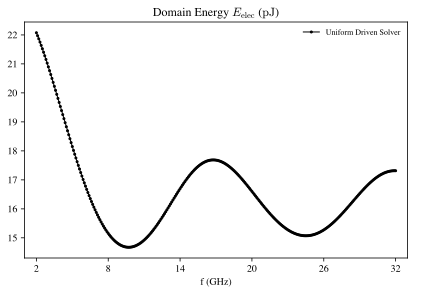
The scattering matrix $S_{ij}$ is printed out in port-S.csv. Since we drive port 1 only in this simulation, Palace will only compute the column $S_{i1}$. We plot the magnitude below.
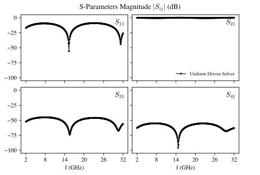
This data is equivalent to the data previously shown in the CPW example, since we consider the same physical model although we have used slightly different solver parameters as shown above.
Adaptive Solver
The primary downside of the uniform driven solver is its slow performance. Every output sample has to be individually calculated, which becomes prohibitive on a fine output grid. This is the problem the adaptive solver addresses.
To perform a driven simulation with the adaptive driven solver, we set "AdaptiveTol" to 1e-1 in the configuration. We will define this quantity more precisely later. Simulation output, like domain-E.csv, has the same structure as the uniform solver — they are evaluated on the same frequency grid specified by "Samples" in the configuration file. However, the adaptive solver constructs a different "internal" frequency grid on which it does HDM solves. This internal grid is automatically chosen by the solver and generally contains far fewer points. From this small internal grid, Palace constructs a reduced order model (ROM) that interpolates the solution at the output grid. We emphasize that the number of HDM solves done is controlled by the "AdaptiveTol", not the output frequency grid. Adding extra points to the output grid incurs only a small incremental cost compared to performing a full HDM solve.
Let us plot the point-wise relative error $\vert E_\mathrm{elec,adaptive} - E_\mathrm{elec,uniform}\vert / \vert E_\mathrm{elec,uniform}\vert$ between the electric energy $E_{\mathrm{elec}}$ of the uniform driven solver above and the adaptive solver with tol 1e-1.
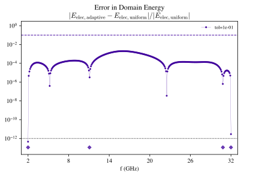
In the plot, the dotted black line at 1e-12 corresponds to the linear residual tolerance Tol of both uniform and adaptive solvers. This is the best-case accuracy floor, below which the difference is dominated by solver noise rather than systematic adaptive solver tolerance. In fact, the error on the actual solution can be higher since it depends on the condition number of the linear system $\kappa[\bm{A}(\omega)]$.
The dashed line at 1e-1 is the adaptive tolerance set by "AdaptiveTol". We will define this quantity below; however, it is important to note that the adaptive tolerance controls the error in the finite element electric field solution. This does not strictly bound the relative error of a derived quantity, although it is a decent heuristic guide.
The ROM sample points $f_\mathrm{sample} = \{2.0, 11.08, 30.81, 32.0\}~\mathrm{GHz}$ are marked with the diamond symbols in the plot. Note that these internal samples are not on the same grid as the output measurements, although they match at the frequency boundaries $f_{\mathrm{min}}$ and $f_{\mathrm{max}}$. We see that near the frequencies of the internal samples, the relative error has a local minimum. Since Palace is only performing 4 HDM solves, rather than the 301 of the uniform solver, the adaptive computation is substantially faster since the interpolation adds only a small overhead.
Let us now look at a sweep of adaptive driven solvers with different values of "AdaptiveTol".
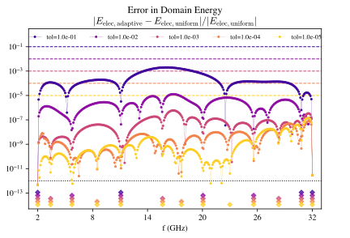
As the tolerance gets smaller, the relative error compared to the uniform solver gets smaller. As expected, the error is generally above the solver tolerance of 1e-12. We also see that Palace adds more internal sample frequencies $f_\mathrm{sample}$ (coloured diamonds) as the tolerance becomes smaller. For this CPW example, the location of the sample frequencies is spread out relatively evenly in the interval $[f_\mathrm{min}, f_\mathrm{max}]$. Finally, we see that the solution has systematic minima near the sample points. This will turn out to be true by construction of the adaptive solver. Local minima in accuracy, not associated with sample points, disappear as the tolerance decreases and the error landscape changes.
To understand the origin of these results, it is important to understand the internals of the adaptive solver in more detail.
Details of the Reduced Order Modeling
Projective Construction
Let us now consider the ROM construction in Palace. As discussed in the theory reference, the matrix equation of the driven solver has the form
\[\bm{A}(\omega) \bm{x} = \left[\bm{K} + i\omega \bm{C} - \omega^2 \bm{M} + \bm{A}_{2}(\omega)\right] \bm{x} = i \omega \bm{b} + \bm{b}_2(\omega).\]
The matrix $\bm{K}$ represents the discretized curl-curl operator, $\bm{M}$ the discretized displacement term, and $\bm{C}$ the dissipative contributions from ports or finite conductivity. The vector $\bm{x}$ is the solution of the discretized electric field we want to solve for and $\bm{b}$ is the drive on ports that is exciting the system. The dimension of these vectors $N$ is the dimension of the finite element space. For the discussion below we will ignore $\bm{A}_{2}(\omega)$ and $\bm{b}_2(\omega)$, which arise from boundary conditions that are non-quadratic in frequency such as wave ports.
The matrix names $\bm{K}$, $\bm{C}$, $\bm{M}$ for the quadratic system above are standard in mechanics and finite element codes. However, they should not be confused with the electrical circuit matrices. In particular, $\bm{C}$ above is not the capacitance matrix. Loosely speaking, $\bm{K}$ corresponds to the inverse inductance $\bm{L}^{-1}$, $\bm{C}$ to the inverse resistance $\bm{R}^{-1}$ and $\bm{M}$ to the capacitance matrix $\bm{C}$.
The idea of the adaptive solver is to transform this problem with a large dimension $N$ into a linear problem with much smaller dimension $n$ that approximates the high-dimensional model well.
\[\left[\bm{K}_r + i\omega \bm{C}_r - \omega^2 \bm{M}_r \right] \bm{x}_r = i \omega \bm{b}_r\]
This also requires a method to efficiently recover the high-dimensional field solution $\bm{x}$ from the reduced $\bm{x}_r$. If we have found such a reduced model, we can quickly solve the small linear system at a specific $\omega$ and recover the full solution and all output measurements. We refer to the procedure of finding the model as the “offline” or “training” phase, and to using it to calculate many output samples as the “online” phase.
There is a large literature on constructing dimensional reductions of linear systems and we refer to the literature for an introduction [1,2]. Palace finds a set of $n$ real orthogonal vectors $\bm{Q}$ that capture the full response of the system in the frequency range of interest $[f_\mathrm{min}, f_\mathrm{max}]$. The projection $\bm{K}_r = \bm{Q}^T \bm{K} \bm{Q}$, $\bm{b}_r = \bm{Q}^T \bm{b}$, etc., and the prolongation $\bm{x} = \bm{Q} \bm{x}_r$ are particularly simple.
The set of basis vectors $\bm{Q}$ that Palace uses are the orthogonalized components of the HDM solutions $\bm{x}^*$ at the "internal" sampling frequencies $f_\mathrm{sample} \in [f_\mathrm{min}, f_\mathrm{max}]$. In fact, Palace uses $\mathrm{Re}\bm{x}^*$, $\mathrm{Im}\bm{x}^*$ as separate vectors so that the basis $\bm{Q}$ is real. As we add more sampling frequencies, the basis of the reduced order model grows and increases the accuracy of the projection, until we satisfy a convergence criterion. This construction is essentially a type of rational interpolation on the whole domain. It is also related to the mathematics of rational Krylov spaces [2].
The Gram-Schmidt orthogonalization algorithm used to construct $\bm{Q}$ from the HDM solutions is determined by the user option "AdaptiveGSOrthogonalization", although a user should generally not need to change this. By default, it uses classical Gram-Schmidt with reorthogonalization which is a good high-precision option.
Choosing Internal Sample Frequencies and Convergence
The above construction does not tell us how to efficiently choose the location of internal sample frequencies $f_\mathrm{sample}$. For this we use the greedy sampling algorithm developed by Pradovera in [3]. This is based on a type of rational (barycentric) interpolation for the solution $\bm{u}$ of linear systems in frequency
\[\bm{u}(\omega) = \frac{\sum_i w_i \bm{u}(\omega_i) / (\omega - \omega_i)}{\sum_i w_i / (\omega - \omega_i)},\]
where the $\omega_i$ are sample frequencies, $\bm{u}(\omega_i)$ solutions at those frequencies, and $w_i$ some weight coefficients fitted. To use this interpolation for our driven electromagnetic solver, we linearize the quadratic $KCM$ operator as a linear operator and identify $\bm{u}^T = (\bm{x}^T, i \omega \bm{x}^T)$. This type of linearization is familiar to physicists as going from Newton's equations (second order in time) to Hamilton's equations (first order in time) and doubling the state dimension from $N$ to $2N$.
We construct a separate barycentric interpolation for each excitation pattern. We initialize the rational interpolation with HDM solutions at the frequency boundary points $f_\mathrm{min}$ and $f_\mathrm{max}$ as well as any frequencies explicitly set by the user using "AddToPROM": true in the sample specification. Afterwards, the Pradovera algorithm suggests new sample locations, based on the maximum expected error of the interpolation. The insight of this approach is that this maximum error can be quickly calculated from the denominator of the barycentric interpolation itself, without any additional HDM solves. Palace prints the location of the sampling points found during the adaptive solver simulations to the log-file.
Convergence of the procedure is based on the relative error of the HDM electric field solution $\bm{x}_\mathrm{HDM}$ compared to the solution calculated by the ROM:
\[\varepsilon = \frac{\vert\vert \bm{x}_\mathrm{HDM}(f^*) - \bm{x}_\mathrm{ROM}(f^*)\vert\vert}{\vert\vert \bm{x}_\mathrm{HDM}(f^*) \vert\vert}\]
Specifically, we declare convergence when this error is below the user-defined tolerance $\varepsilon < \varepsilon_\mathrm{tol}$, set by "AdaptiveTol", for a number of consecutive frequency samples, set by "AdaptiveConvergenceMemory". Note that the norm $\vert\vert \bm{x} \vert\vert$ is the L2 norm in the finite element space. So this is similar to, but not the same as, the physical norm computed from the overlap in space $\int \bm{E}^*(\bm{r}) \cdot \bm{E}(\bm{r}) d^3r$, which corresponds to a mass-weighting in finite-elements $\bm{x}^T\bm{M}\bm{x}$. This difference between L2 and mass-weighted overlap can be significant on highly anisotropic meshes.
As mentioned above, the relative error is of the electric fields over the global domain. However, the relative error on a derived measurement need not satisfy that error bound. This occurs when the measurement is difficult, such as integrating the electric field in a region where the field is tiny.
Adaptive Solver Problems and User Guidance
The rational interpolation approach above is extremely efficient at building a basis using only a very small number of HDM solves. However, there are two challenges that we encounter in practical use.
Early termination due to accidental convergence. As discussed above, the convergence criterion is that the error from the HDM solve at the next suggested sample point $f^*$ is below the threshold $\varepsilon_\mathrm{tol}$. Although the algorithm picks $f^*$ to be the position where the error indicator is largest, the error evaluated there can sometimes be smaller than the error expected from the interpolation. This means that the solution looks more converged than it is and the algorithm terminates early. This is discussed in the paper by Pradovera [3].
To avoid this, we introduce a memory. The algorithm only terminates once a certain number of consecutive samples in a row are below tolerance. This number is defined by the "AdaptiveConvergenceMemory" configuration. The default is 2, which is small. Increasing this number to say 3 or 4, especially in models where the user does not understand the convergence properties, can be helpful. However, each HDM sample adds a substantial computational cost to the training phase.
Numerical problems due to finite precision. The mathematical formulation of the rational interpolation for the error indicator assumes that the solution at the sample points is exact. However, in reality there is the linear solver tolerance "Linear"/"Tol" that sets the error on this and can propagate that error to the prediction of the samples. A detailed discussion of this error propagation is beyond the scope of this tutorial. In practice this is not a problem, provided that your value of "AdaptiveTol" is much larger than the linear solver "Tol". What “much larger” means is a model-dependent quantity, although we have found that a factor $10^4$ or larger works well.
What happens if the "AdaptiveTol" is too close to the linear solver "Tol"? In practice, we have observed that the rational interpolation then cannot be accurately fit, which Palace will log as warnings. This breaks the next best frequency prediction, which causes the adaptive solver to frequently oversample certain frequency regions and sometimes undersample other regions. While this does not break the ROM structure as such — it will accommodate a larger number of basis states — the quality of that basis can be poor and the desired tolerance not reached.
The number of HDM samples for the ROM is capped by the configuration "AdaptiveMaxSamples" (default: 20), after which the solver just uses the capped ROM to do the computation. That cap is helpful to bound the oversampling cases due to numerical issues. However, under normal conditions the user should increase "AdaptiveMaxSamples" to guarantee accuracy.
As discussed above, a user can also force certain frequency points to be added to the PROM before the adaptive sampling starts by using "AddToPROM": true. This is primarily a debugging tool. Routine usage is not recommended — adding sample by hand negates the major benefit of the adaptive solver to “choose the best” samples for a given accuracy. However, this option might help investigate convergence issues. If adding points, the user should be careful not to accidentally set "AddToPROM": true on a dense grid, since this will perform a very large number of HDM solves and keep them in computer memory for the duration of the computation.
Multi-excitations
In the case of multi-excitations, the adaptive solver will construct a barycentric rational interpolation of each excitation separately and perform frequency prediction/sampling separately for each excitation. The boundary frequencies $f_{\mathrm{min}}$, $f_{\mathrm{max}}$ and the "AddToPROM": true user-samples will be added separately to the interpolation for each excitation.
However, the ROM itself and basis $\bm{Q}$ will be the combination of samples from all excitations and this combined basis enters the stopping criterion $\bm{x}_\mathrm{ROM}(f^*)$. It can sometimes happen that later excitations already have a good enough basis from the samples of previous excitations and return earlier than if each were simulated individually.
Note that "AdaptiveMaxSamples" refers to the number of samples per excitation in the multi-excitation case.
Non-Quadratic Boundary Conditions in the Adaptive Solver
In the above discussion, we have neglected the possibility of an $\bm{A}_2(\omega)$ term. This is a non-quadratic frequency term, which can arise from WavePort / WavePortPEC, Conductivity, or Farfield boundary conditions. If such terms are present, the above algorithms will mostly proceed as described above — there will be frequency samples with HDM solves of the full system now containing $\bm{A}_2(\omega)$, which will be added to the basis $\bm{Q}$. During the online phase, Palace uses the projected $\bm{K}_r$, $\bm{C}_r$, $\bm{M}_r$, $\bm{A}_{2,r}(\omega)$ to solve the reduced problem efficiently. Having an $\bm{A}_2(\omega)$ term will be slower, since Palace will have to recompute $\bm{A}_{2,r}(\omega)$ for every output $\omega$.
However, the interplay between these non-quadratic boundary conditions and the frequency prediction algorithm is more delicate. The frequency prediction algorithm does not naturally take these contributions into account, since they cannot be linearized into a system of size $2N$. The error of linearizing $\bm{A}_2(\omega)$ should be small if its non-$KCM$ contributions are small as compared to the $KCM$ contribution of the rest of the system. However, if non-$KCM$ contributions of $\bm{A}_2(\omega)$ are large, it is possible that the frequency sampling will choose a sub-optimal basis and lead to convergence problems. The tuning described above in Adaptive Solver Problems and User Guidance could be helpful for this case too.
Revisiting the Two Coplanar Waveguide Example (Part II)
With the knowledge of how the adaptive solver works internally, let us revisit the CPW example discussed above. We can now interpret several features of the convergence plot better:
- The origin of the local minima in the relative error near the sampling frequencies. Because the adaptive solver performs a full HDM solution at the sample frequency and uses that as a basis vector for the ROM, the response at that frequency would be exactly reproduced. This is seen exactly at $f_\mathrm{min}$ and $f_\mathrm{max}$. Output frequency points near the sample frequency are still much more accurate than expected.
- The fact that the sampling points used are spaced roughly evenly in frequency. Because the algorithm for finding the next best frequency is based on a rational interpolation, the next error is largest near any unaccounted pole in the response of the system. The CPW model does not have high-Q poles near the real frequency domain of interest $[f_\mathrm{min}, f_\mathrm{max}]$, so the error estimator is not particularly structured in frequency. We will discuss this idea in more detail in the next section on a transmon model.
- The difference between the
"AdaptiveTol"and the relative error of the output quantity. The adaptive tolerance is a relative convergence error for the finite element coefficients of the electric field. Any derived quantity will have an absolute error bounded proportionally by this accuracy and the sensitivity to the electric field."AdaptiveTol"is at best a heuristic guide for the relative error of a derived quantity. The true relative error could be far better or far worse than"AdaptiveTol".
Point 3 above is really about the nature of solver convergence and errors generally, rather than being specific to the adaptive solver. However, it is helpful to illustrate this point in more striking detail by looking at the convergence of the scattering parameters with different "AdaptiveTol".
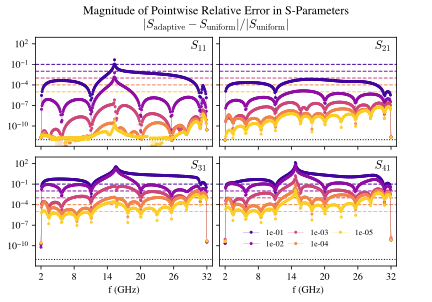
The plot above shows the relative error $\vert S_{\mathrm{adaptive}} - S_{\mathrm{uniform}}\vert / \vert S_{\mathrm{uniform}}\vert$ evaluated at each output frequency (point-wise error). We see that the relative error can be very bad! However, this should not be surprising. The only scattering matrix that has a large value (of order 1) is $S_{21}$ and we see that the relative error there is well behaved. The bad relative error in the other plots is because the magnitude of $S_{i1}$ is tiny to begin with, which magnifies the relative error. For example, the magnitude $\vert S_{11} \vert$ drops down to around $-60~\mathrm{dB} = 10^{-3}$ near $15~\mathrm{GHz}$. That is exactly the location where the relative error of $S_{11}$ spikes in the error plot above. The relative error in $S_{31}$, $S_{41}$ is always large since their values are small.
A detailed discussion of error estimates and error propagation from the electric field to derived quantities is beyond the scope of this tutorial. From a practical perspective, we encourage users to validate some of the adaptive driven simulations against uniform driven simulations in order to get a practical sense of the error for different quantities, to help identify an appropriate adaptive tolerance and to diagnose convergence errors.
A useful and cheap visualization may also be to plot the absolute error normalized by an ”appropriate” scale factor. For example, below we plot the $\vert S_{\mathrm{adaptive}} - S_{\mathrm{uniform}}\vert / \vert\vert S_{\mathrm{uniform}}\vert\vert_{\mathrm{RMS}}$. Here $\vert\vert S_{\mathrm{uniform}}\vert\vert_{\mathrm{RMS}}$ is the root-mean-square average of $\vert S \vert$ over the frequency range. While this does not substitute for a proper error analysis, it gives a sense of convergence while removing the extreme spikes in the pointwise-relative error.
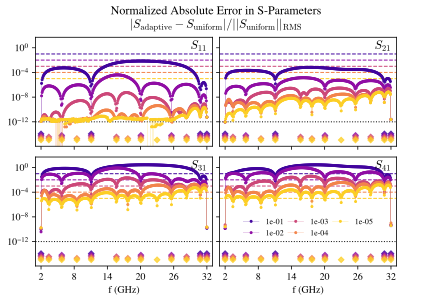
Finally, let us look at how the error indicator $\varepsilon$ calculated by the adaptive solver evolves as new sample points are added.
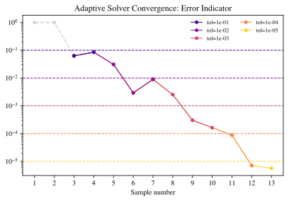
The light grey star points $1,2$ correspond to initial samples at $f_\mathrm{min}$ and $f_\mathrm{max}$. We actually exclude these points from convergence (i.e. they have error "inf"). They are drawn here as points at $1.0$ only for illustration. As the adaptive algorithm continues, more sample points are found that decrease the error indicator. In our simulation, we used the default "AdaptiveConvergenceMemory" value of 2. So the simulations converge after two consecutive points are below "AdaptiveTol". As we can see from the plot above, the error indicator does not have to decrease monotonically. This means that the error indicator can go above the target tolerance before dipping below it again. See the discussion above in Adaptive Solver Problems and User Guidance.
Driving the Transmon Model
Set-Up
Let us now apply the driven and adaptive solver to a model of a transmon qubit, which was already discussed in the eigenmode tutorial. We assume familiarity with that tutorial. As discussed there, the model consists of a transmon qubit and a quarter-wave coplanar waveguide readout resonator coupled to a feedline. There are three lumped ports in this model: ports 1 and 2 are the $50~\Omega$ resistive feedline terminations and port 3 is a passive LC element ($L = 14.86\,\textrm{nH}$, $C = 5.5\,\textrm{fF}$) representing the linearised Josephson junction.
There are two eigenmodes of particular interest that we discovered in the previous tutorial:
- A “transmon” mode near $4.10~\textrm{GHz}$ with $Q = 1.8 \cdot 10^4$,
- A “resonator” mode near $5.60~\textrm{GHz}$ with $Q = 7.9 \cdot 10^3$.
The eigenmode visualization shows that even the transmon mode has appreciable weight on the readout resonator and in the feedline.
We will now perform uniform and adaptive driven simulations on this model, by exciting the $50~\Ohm$ resistive ports. We will use the same mesh examples/transmon/mesh/transmon.msh2 as the eigenmode example. We use the eigenmode set-up file in examples/transmon/transmon_coarse.json and adapt it to a driven solver (examples/transmon/transmon_tutorial_driven.json):
{
"Problem" : {
"Verbose": 2,
"Output" : "postpro/transmon_tutorial_driven_rom/driven_adaptive_1e-3",
"Type" : "Driven"
},
"Boundaries": {
"LumpedPort": [
{ "Attributes": [6], "Index": 1, "Direction": "+X", "Excitation": 1, "R": 50 },
{ "Attributes": [7], "Index": 2, "Direction": "-X", "Excitation": 2, "R": 50 },
{ "Attributes": [4], "Index": 3, "Direction": "+Y", "C": 5.5e-15, "L": 1.486e-8 }
],
"PEC" : { "Attributes": [5] },
"Absorbing" : { "Order": 1, "Attributes": [3] }
},
"Model" : { "Refinement": {"MaxIts": 0}, "Mesh": "mesh/transmon.msh2", "L0": 1.0e-6 },
"Domains" : {
"Postprocessing": { "Energy": [ { "Attributes": [1], "Index": 1 } ] },
"Materials" : [
{ "Permittivity": 1.0, "Attributes": [2], "Permeability": 1.0 },
{
"LossTan" : [ 3.0e-5, 3.0e-5, 8.6e-5 ],
"Permittivity": [ 9.3, 9.3, 11.5 ],
"Attributes" : [ 1 ],
"Permeability": [ 0.99999975, 0.99999975, 0.99999979 ],
"MaterialAxes": [ [0.8, 0.6, 0.0], [-0.6, 0.8, 0.0], [0.0, 0.0, 1.0] ]
}
]
},
"Solver" : {
"Driven": {
"Samples" : [ {"Type": "Linear", "MinFreq": 3.5, "MaxFreq": 6.5, "FreqStep": 0.025} ],
"AdaptiveTol": 1e-3
},
"Order" : 2,
"Linear": {"Type": "Default", "Tol": 1.0e-12, "MaxIts": 1000}
}
}In this case we will be using the multi-excitation feature of Palace. Because we have specified both "Excitation": 1 on port 1 and "Excitation": 2 on port 2, Palace will iterate over these excitations separately. This makes no difference to the uniform solver, since it solves every excitation and frequency sample separately. However, for the adaptive solver, the projective basis $\bm{Q}$ is shared between all excitations and the convergence criterion $\varepsilon < \varepsilon_\mathrm{tol}$ is on that combined basis. This means that the output of each excitation can be different when we simulate them together with one ROM or separately with two ROMs. However, these differences are within the adaptive tolerance. See the discussion above.
The above json file is for the adaptive solver with "AdaptiveTol": 1e-3. If we set "AdaptiveTol": 0.0 or leave this config out, we trigger the uniform solver.
Uniform Solver Results
As for the CPW example, let us look at the electric energy of the model. Since there are now two excitations, we get a response for both of them. However, since the mirror asymmetry of the model is small, the difference between driving port 1 and port 2 is also small.
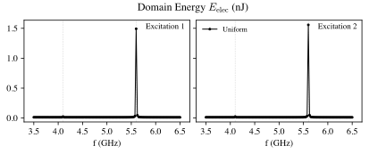
Since we are driving both resistive ports, we now obtain the full scattering matrix, not just one column. Note that by convention, Palace prints 0.0 (-inf in dB) for the scattering matrix on the junction port. We do not include this here.
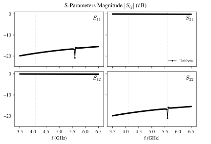
We see that the data is now far more structured, due to the presence of the two high-$Q$ eigenmodes. We see their effects in spikes and dips in the response measurement at frequencies in the vicinity of the real component of the eigenfrequencies (vertical dashed lines). The qubit mode is weakly coupled to the feedline, so we expect the scattering matrix $|S_{11}|$ to have an extremely sharp feature near $4.10~\textrm{GHz}$. The width of that feature is related to the inverse of the quality factor. Because we have sampled the output frequency on a linear frequency grid, it might be difficult, a priori, to see this feature just from the scattering matrix. We do see a small feature in the domain electric energy. The readout resonator is more strongly coupled to the feedline and therefore has a broader feature. Away from the eigenmode features, the system behaves like a simple CPW.
Adaptive Solver Results
Let us now plot the RMS normalized absolute error (as discussed above for the CPW example) between the uniform and adaptive solver. For the adaptive solver, we pick tolerances 1e-1, 1e-2, 1e-3, 1e-4, 1e-5.
First let us look at the domain energy:
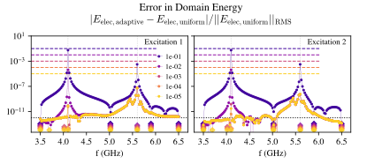
The conventions are the same as in the plots of the CPW example above. Here, however, the coloured diamonds mark sample frequencies from the rational interpolations of excitations 1 and 2 together since they form a combined ROM basis. We see that the adaptive solver converges very quickly. The error for tolerance 1e-1 is already quite small for all frequencies except near the poles. When we reach 1e-3 the adaptive solver puts HDM sample points near the pole frequencies and the error drops dramatically. Tightening the tolerance to 1e-4 and 1e-5 only slightly decreases the error.
The error drop is even more dramatic for the error in the S-parameters:
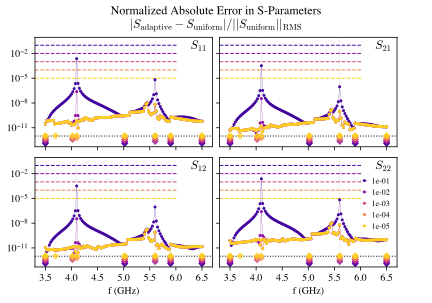
In both plots above, the error is more structured than it was in the CPW example. It is worse near the eigenmode locations and better far away. The adaptive solver also adds HDM solves in a more structured manner to “shadow” the eigenmodes. This behaviour is simple to interpret — the response of the system in the real interval $[f_\mathrm{min}, f_\mathrm{max}]$ is dominated by the singular response of the eigenmodes (poles). The rational interpolation of the adaptive solver can reconstruct the existence and approximate location of these poles. Then it tries to capture the effect of the poles with a HDM solve as best it can on the real axis. If you look carefully at the error in the domain energy, you will see a small residual error “spike” around the poles even at adaptive tolerance 1e-5. This can happen as the HDM solve on the real axis does not fully capture the effect of the true eigenmode. If we were to tighten the adaptive tolerance further, it would cluster additional HDM sample points around the poles to remove this spike.
We also remind the reader that the uniform solver which we use as a baseline here is also less accurate close to poles, since the condition number $\kappa[\bm{A}(\omega)]$ is larger. However, this tends to be an issue only for high-$Q$ poles or at very high precision.
Finally, in both the uniform and adaptive driven solver, we have to choose the output grid in advance. If we have an estimate for the location of the eigenfrequencies and port $Q$-factor, we can choose a finer grid around this feature. However, the adaptive reduced order model already contains a good estimate of the eigenmodes close to the real axis! We would like to use this in postprocessing without rerunning the simulation. In fact, the ROM matrices $\bm{K}_r$, $\bm{C}_r$ and $\bm{M}_r$ are close in spirit to a circuit. To make that connection precise, we need to connect the abstract ROM matrix to real electrical signals.
Literature & References
[1] P. Benner, D. C. Sorensen, and V. Mehrmann, Eds., Dimension Reduction of Large-Scale Systems: Proceedings of a Workshop held in Oberwolfach, Germany, October 19–25, 2003. in Lecture Notes in Computational Science and Engineering, no. 45. Berlin, Heidelberg: Springer Berlin Heidelberg, 2005. doi: 10.1007/3-540-27909-1.
[2] A. C. Antoulas, Approximation of Large-Scale Dynamical Systems. Society for Industrial and Applied Mathematics, 2005. doi: 10.1137/1.9780898718713.
[3] D. Pradovera, “Toward a certified greedy Loewner framework with minimal sampling,” Adv Comput Math, vol. 49, no. 6, p. 92, Dec. 2023, doi: 10.1007/s10444-023-10091-7.
[4] D. Pradovera, “Interpolatory rational model order reduction of parametric problems lacking uniform inf-sup stability,” SIAM J. Numer. Anal., vol. 58, no. 4, pp. 2265–2293, Jan. 2020, doi: 10.1137/19M1269695.